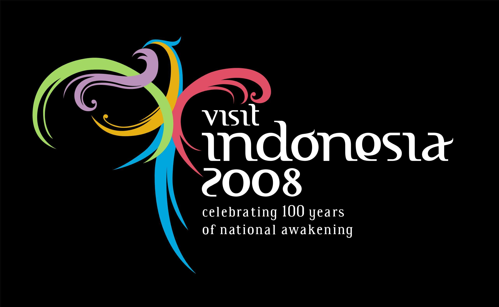

About Us Wonderful Indonesia!

Logo Pariwisata Indonesia adalah Wonderful Indonesia yang diresmikan pada 1 Januari 2011 yang lalu. Sebelumnya pada 2008 Wonderful indonesia bernama Visit Indonesia. Tahukah Anda makna dan arti dari logo wonderfull Indonesia yang sederhana akan tetapi menurut Saya sangat elegan dan berkesan.
Tahukah Anda bahwa logo Wonderful Indonesia pada awal diresmikan sampai sekarang telah mengalami beberapa perubahan, atau tepatnya reposisi logo. Karena sekilas logo wonderfull Indonesia tersebut tidak pernah mengalami perubahan sama sekali. Logo wonderful indonesia dari tahun ketahun masih mengedepankan bentangan sayap burung Garuda .
Berikut adalah makna dan arti dari logo Wonderful Indonesia.
1.Bentuk logo mengambil konsep Garuda Pancasila sebagai dasar Negara akan tetapi dengan pengolahan yang modern.
2.Lima Sila digambarkan berupa 5 garis warna yang berbeda dan merupakan simbol diversity Indonesia yang penuh dengan keanekaragaman.
3.Logo diolah menjadi bentuk dan warna yang dinamis sebagai perwujutan dari dinamika Indonesia sebagai negara berkembang.
4.Jenis huruf dan logo diambil dari elemen otentik Indonesia yang disempurnakan dengan sentuhan modern.
For further information please contact : administrator@Wonderful-Indonesia.com